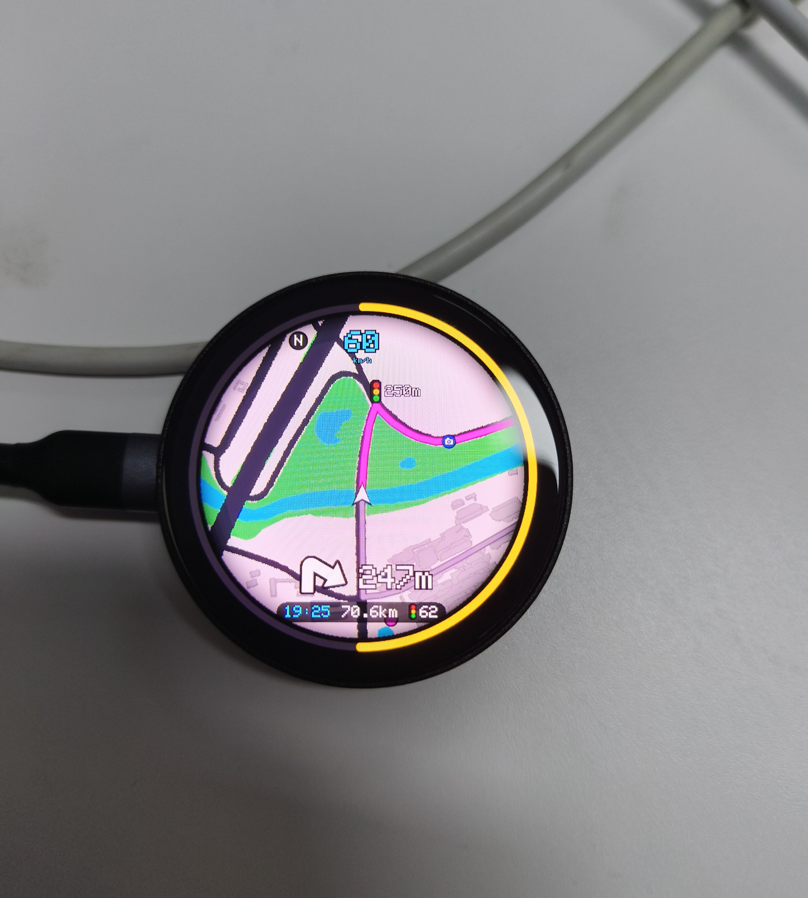
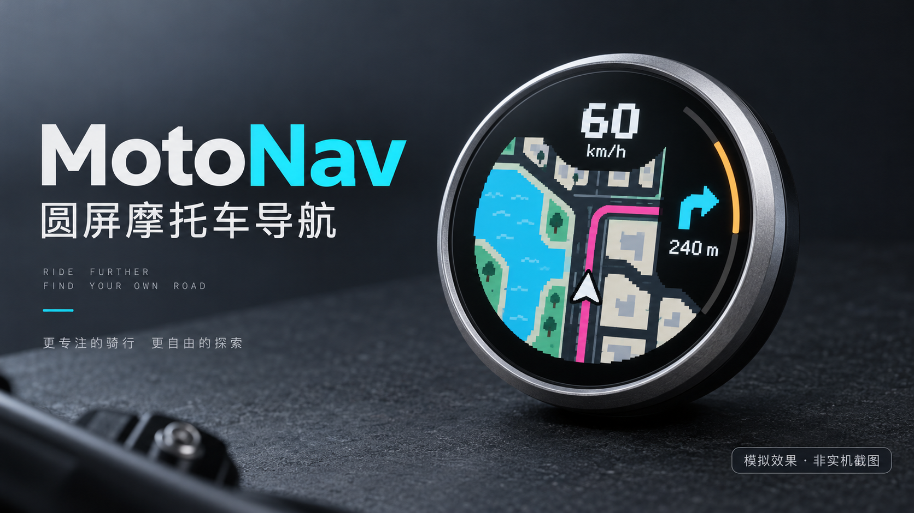
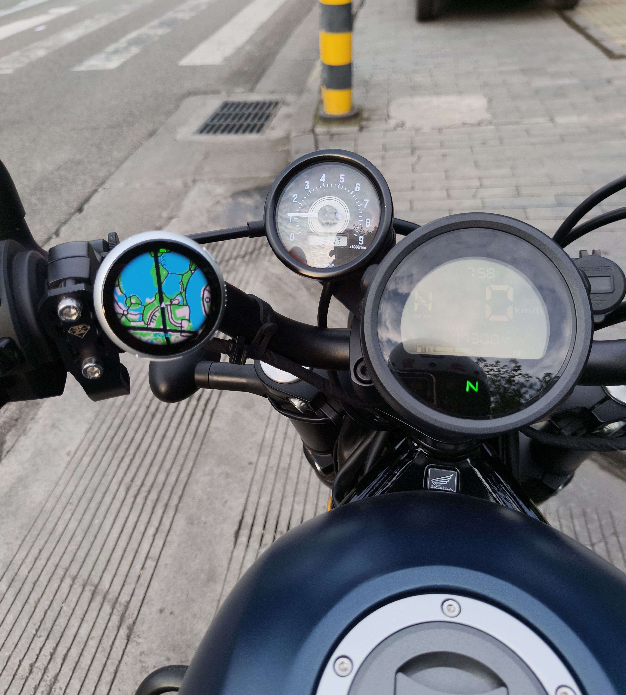
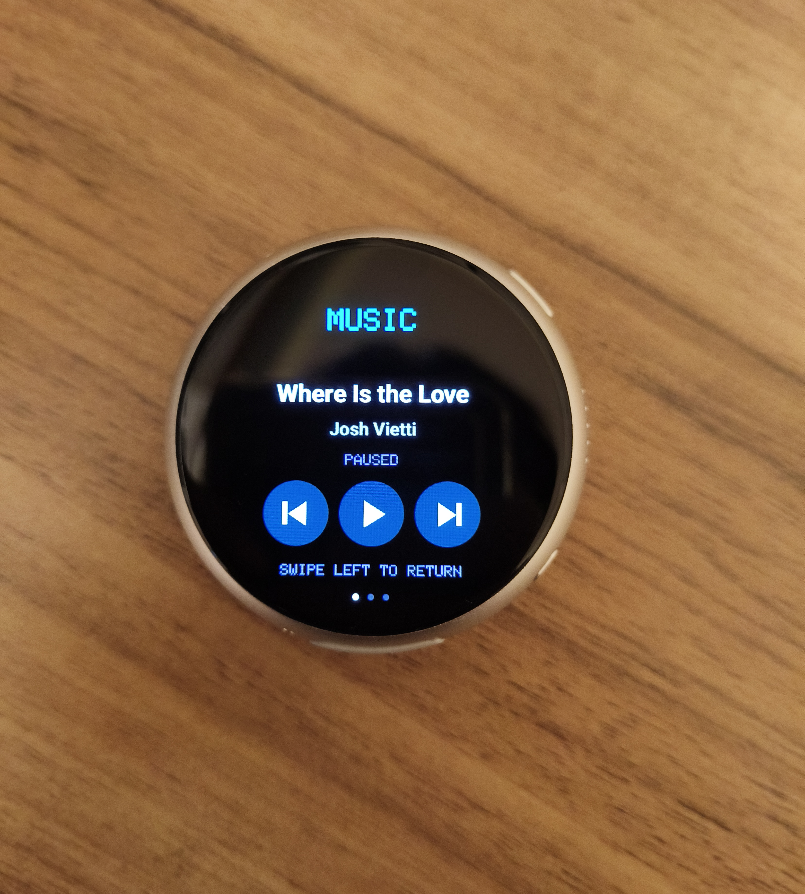
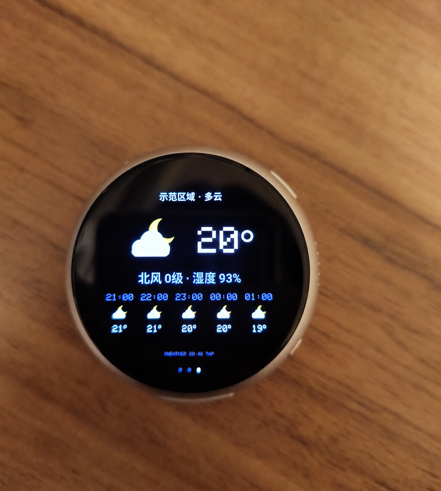
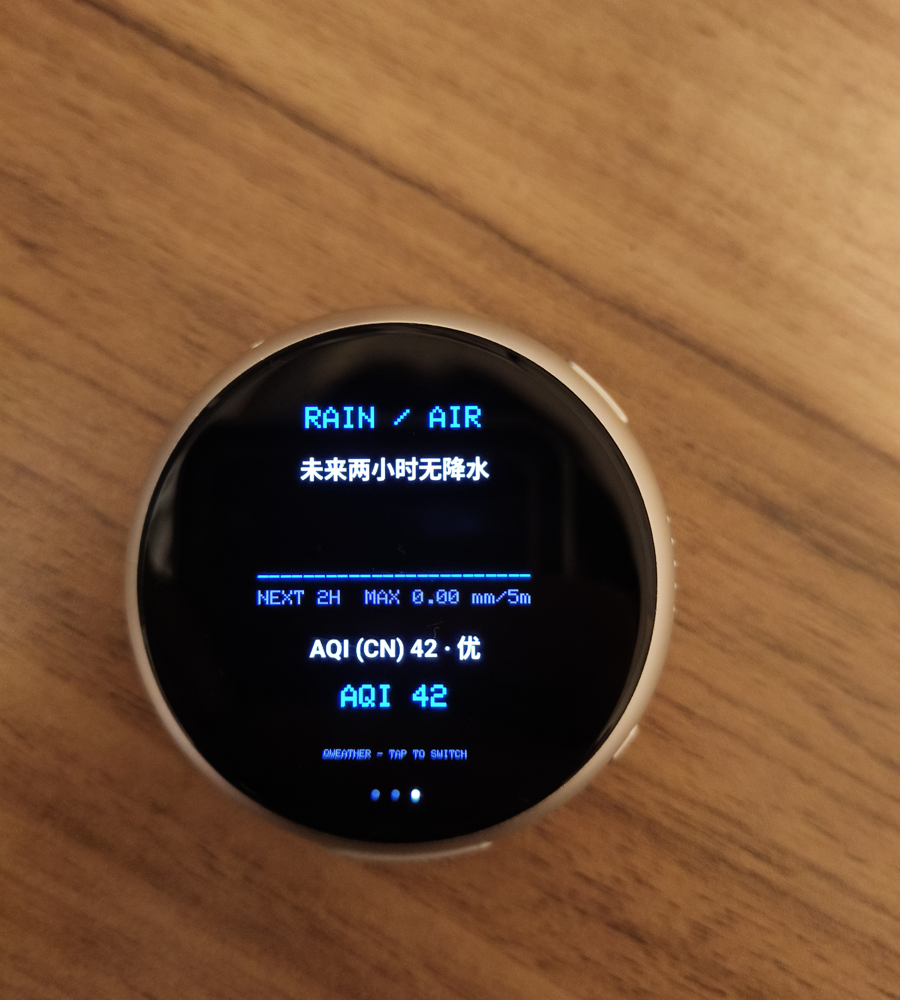
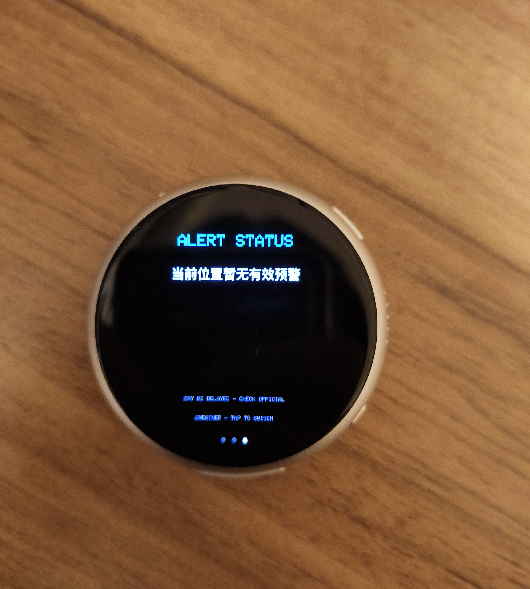
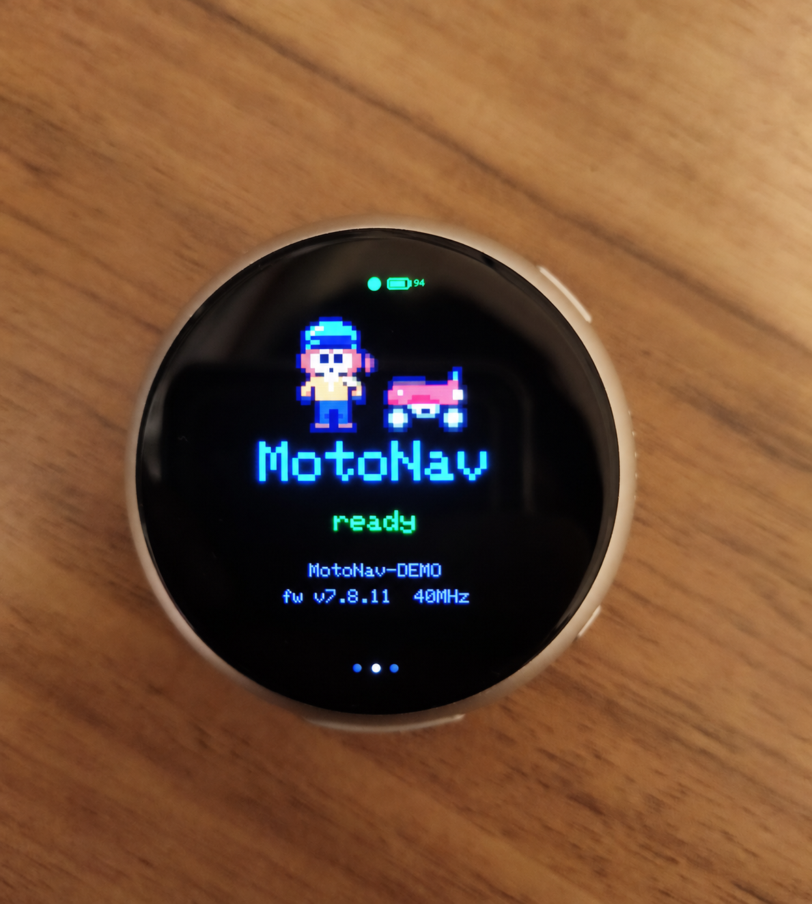
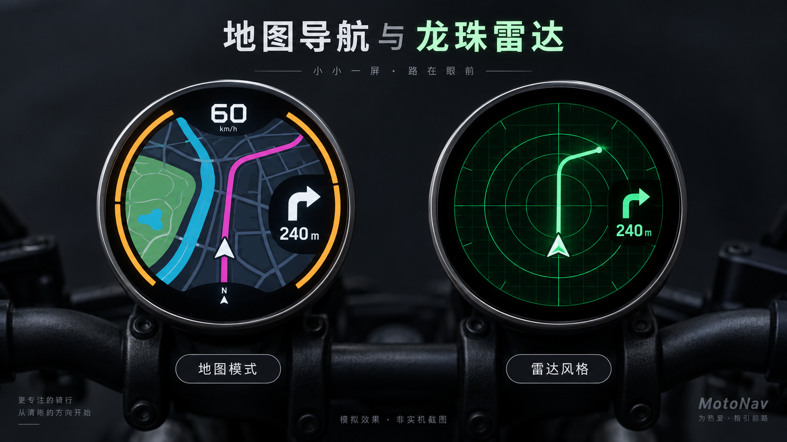
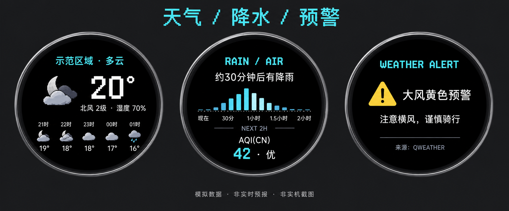

实拍 · 桌面演示
路线，抬眼可见
地图、转向距离、车速和行程环集中呈现。
AI 辅助开发 · 个人验证与迭代 · 仅限非商业使用
Android + ESP32-S3 · App 8.3.19 / Firmware 7.8.11手机处理路线与数据，车把上的圆屏呈现沿途信息。面向愿意自行配置和打包的骑行爱好者。

AI 模拟效果 · 非实机截图 · 外观与界面以实际设备为准

将独立圆屏安装在车把附近，让路线提示融入车辆仪表区域。照片为停车状态下的安装记录。
本项目介绍使用微雪 ESP32-S3-Touch-AMOLED-1.75 圆屏，分辨率 466×466。
来自用户提供的设备照片。天气数据为拍摄时的内容，部分照片已进行隐私处理。

地图、转向距离、车速和行程环集中呈现。

查看曲目，控制上一首、播放或暂停、下一首。

实况与未来五小时预报。区域名称已替换，非原始照片。

短时降水趋势与 AQI 在一页内查看。

展示当前位置的预警摘要；照片中为暂无有效预警状态。

像素风启动页与设备状态。设备后缀已替换，非原始照片。
三段实机拍摄的桌面演示，已移除声音。点击播放查看，不代表独立路测结果。
观察路线与转向提示的变化。
圆形界面上的动态路线展示。
另一种导航视觉表现。
下面两张及页首头图均由 AI 生成。界面和硬件细节为概念展示，天气、路线与数值均为虚构示例。


模拟效果 · 非实机截图 · 非实时预报
Windows 一键打包生成自己的包名与签名，首次使用需联网准备环境。
自行配置地图与和风天气凭据，备份个人签名后再更新。
为 1.75 英寸板构建并刷入固件，再与手机配合使用。